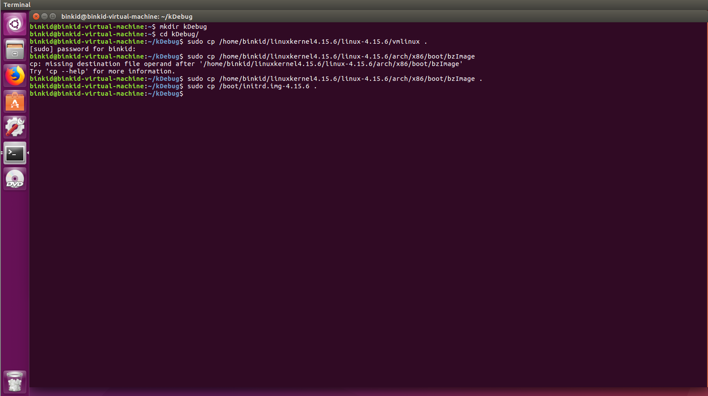
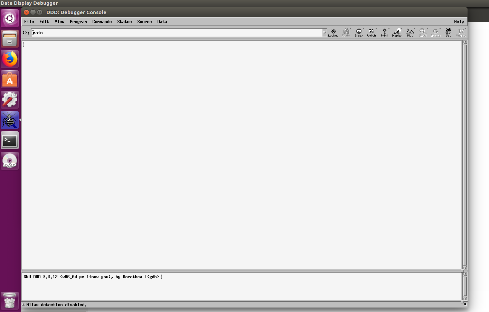
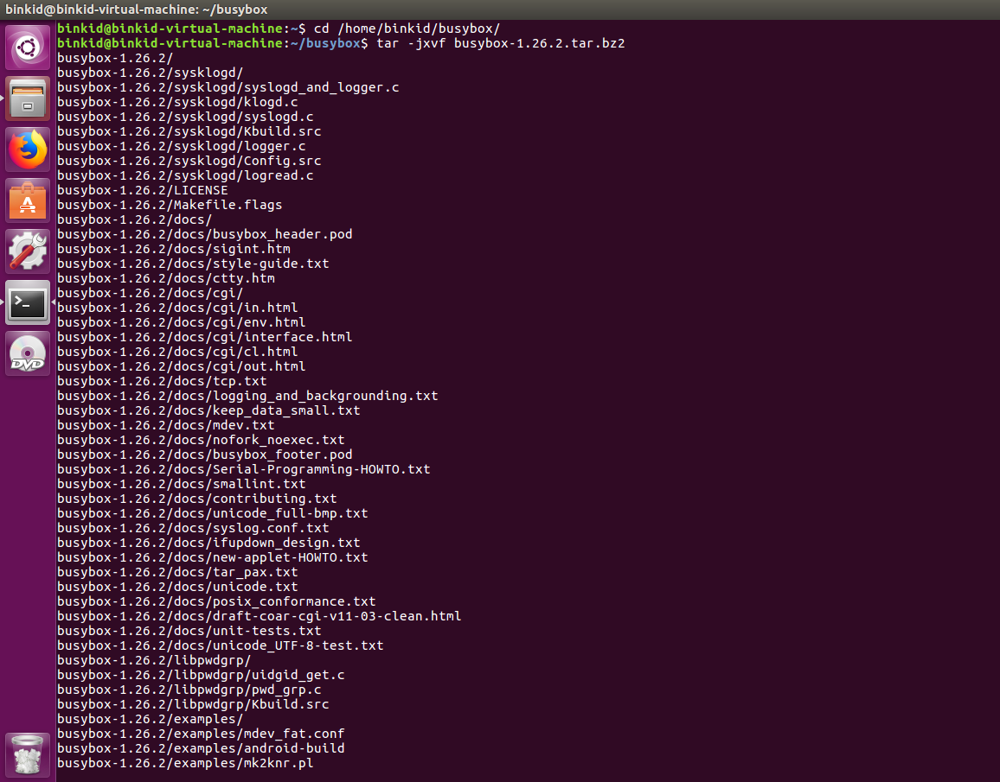
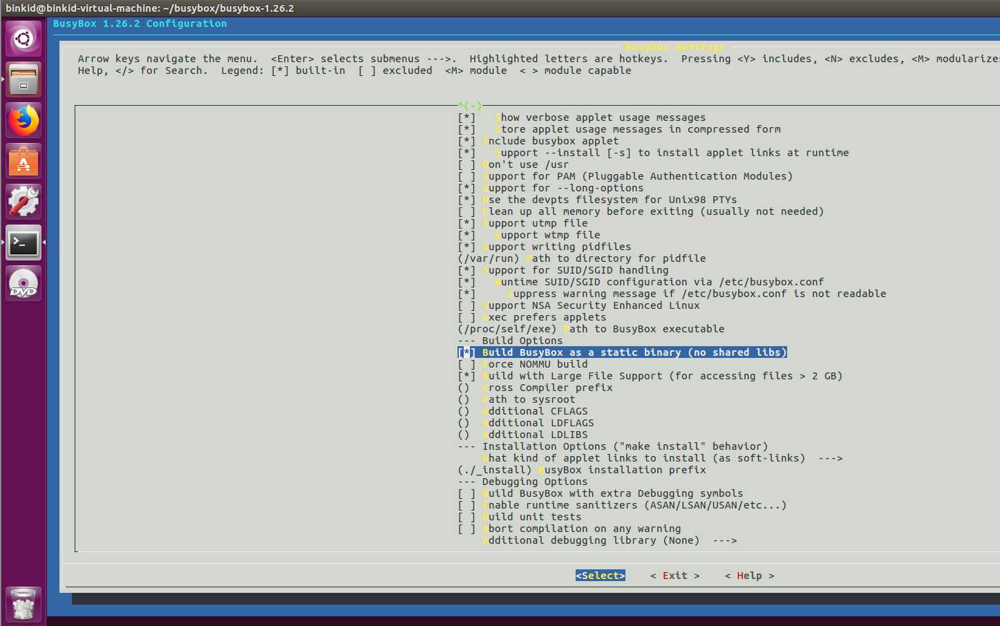
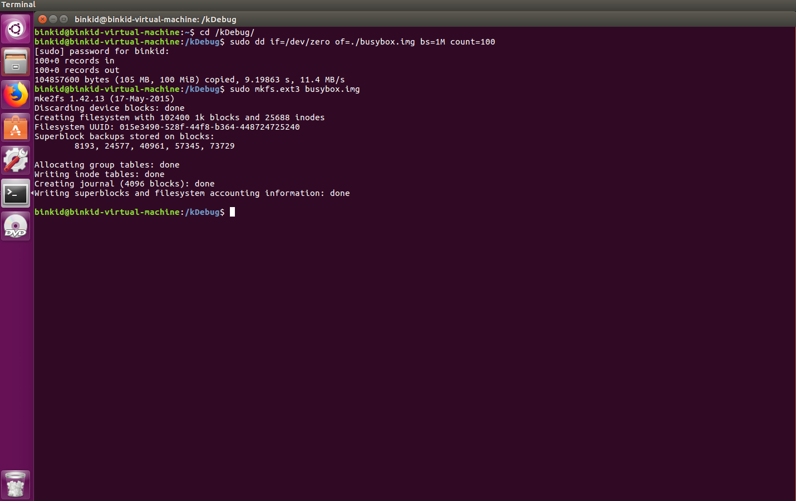
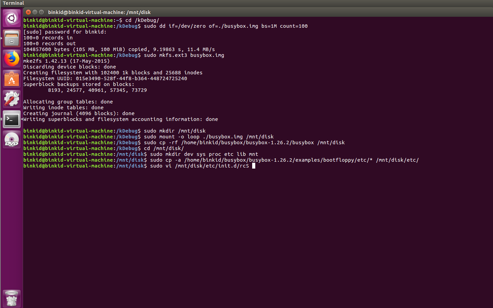
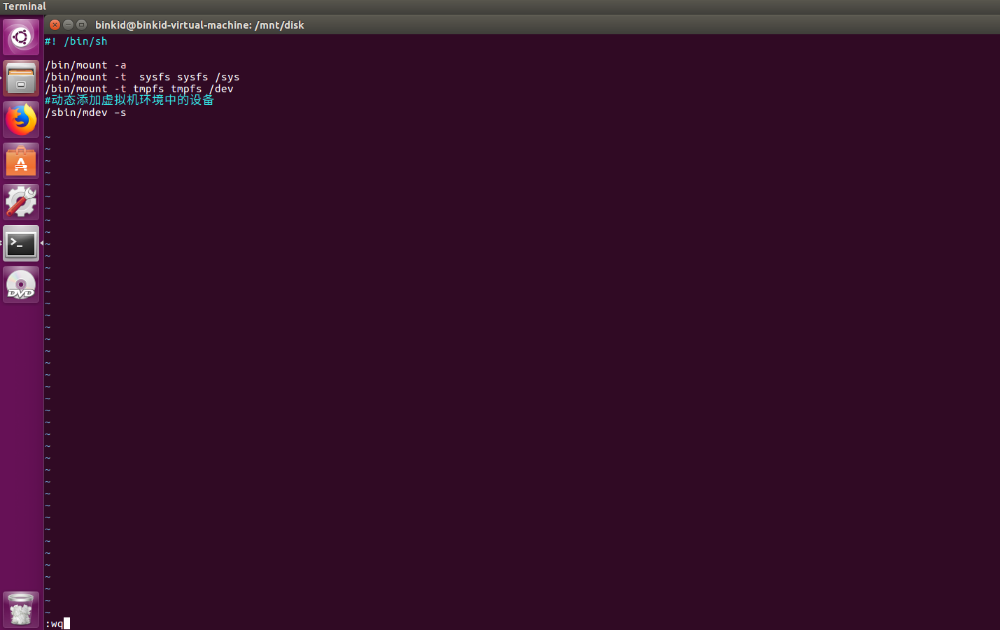
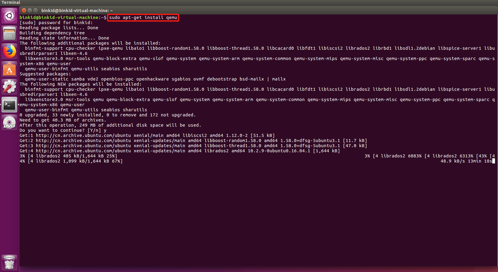
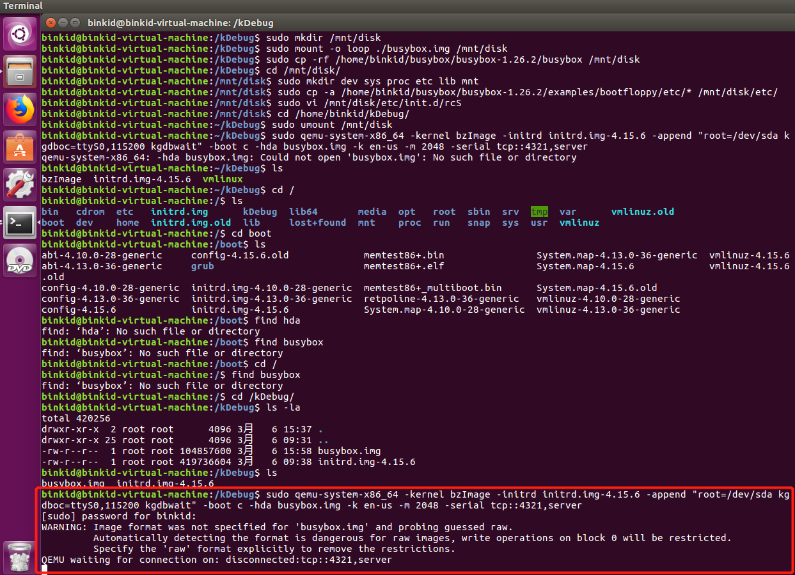
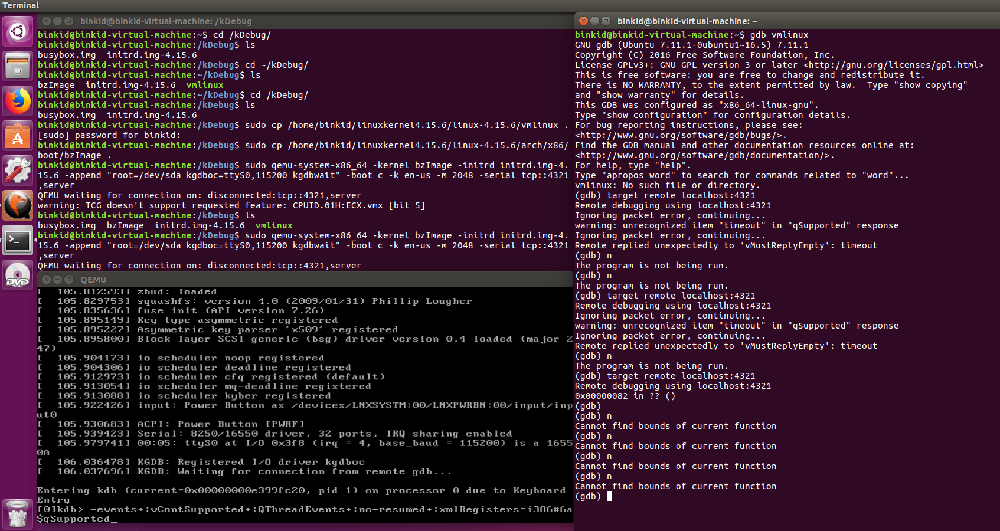

编译内核与备份
编译安装4.15.6版本内核，创建kDebug文件夹，复制bzImage、vmlinux、initrd.img-4.1.38备份到kDebug。
1 | mkdir kDebug |

安装ddd
GDB本身是一种命令行调试工具，但是通过DDD(data Display Debugger, 地址是https://www.gnu.org/software/ddd/)可以图形化界面(在文件有deb包，可以双击安装)

制作自己的文件系统
Busybox
BusyBox是一个遵循GPL协议、以自由软件形式发行的应用程序。Busybox在单一的可执行文件中提供了精简的Unix工具集，可运行于多款POSIX环境的操作系统，例如Linux（包括Android）、Hurd、FreeBSD等等。由于BusyBox可执行文件尺寸小、并通常使用Linux内核，这使得它非常适合使用于嵌入式系统。此外，由于BusyBox功能强大，因此有些人将BusyBox称为“嵌入式Linux的瑞士军刀”。
下载和解压
到https://www.busybox.net/downloads/中下载最新的busybox，并运行如下命令解压：tar -jxvf busybox-1.26.2.tar.bz2

编译和安装
运行
make menuconfig进行配置
- 运行
make进行编译 - 运行
sudo make install进行安装 - 当前目录下的
busybox就是运行文件
制作文件系统
进入kDebug，在当前目录下创建一个名为busybox.img,大小为100M的文件，并将其格式化为ext3的文件系统
1
2sudo dd if=/dev/zero of=./busybox.img bs=1M count=100
sudo mkfs.ext3 busybox.img
将这个虚拟磁盘文件挂载到本地系统中，这样我们可以像访问本地文件一样访问它，并将生成好的busybox的文件拷贝到这个文件里。
1
2
3sudo mkdir /mnt/disk
sudo mount -o loop ./busybox.img /mnt/disk
sudo cp -rf home/binkid/busybox/busybox-1.26.2/busybox /mnt/disk创建必须的文件系统目录
1
2cd /mnt/disk/
sudo mkdir dev sys proc etc lib mnt使用busybox默认的设置文件
1
2sudo cp –a /home/fengjie/busybox-1.26.2/examples/bootfloppy/etc/* /mnt/disk/etc
sudo vi /mnt/disk/etc/init.d/rcS
将下面内容拷贝到rcS里:
1
2
3
4
5
6#! /bin/sh
/bin/mount -a
/bin/mount -t sysfs sysfs /sys
/bin/mount -t tmpfs tmpfs /dev
#动态添加虚拟机环境中的设备
/sbin/mdev –s
做完上面对工作后，我们就可以卸载虚拟磁盘文件了
1
2cd /home/binkid/kDebug/
sudo umount /mnt/disk
安装qemu

gdb + kgdb调试内核
qemu启动目标机
使能kgdb可以在内核启动时增加使能参数，也可以在内核启动后echo kgdboc模块的参数来达到目的，这里我们采取在内核启动时增加启动参数(kgdboc=ttyS0,115200 kgdbwait)的方式，运行如下命令使用qemu运行自己编译的内核
1 | sudo qemu-system-x86_64 -kernel bzImage -initrd initrd.img-4.15.6 -append "root=/dev/sda kgdboc=ttyS0,115200 kgdbwait" -boot c -k en-us -m 2048 -serial tcp::4321,server |

错误解决：发现开始创建的kDebug文件夹在home目录下，不在根目录下，根目录也存在kDebug，不是同一文件夹，复制bzImage、vmlinux、initrd.img-4.1.38到根目录kDebug，在根目录kDebug文件夹下再次运行命令
开发机中调试
输入如下命令
1 | gdb vmlinux |
连接成功后输入（gdb）n单步跟踪程序

出错：Cannot find bounds of current function查阅资料后错误仍未解决。